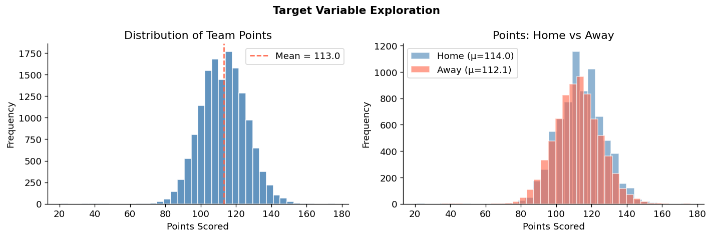
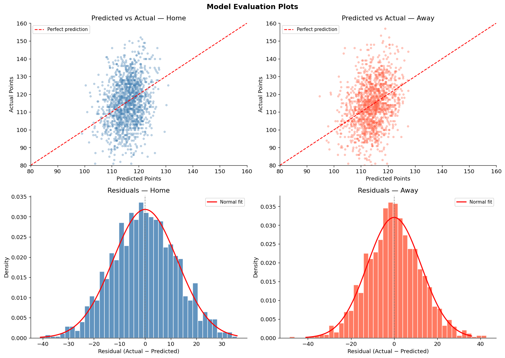
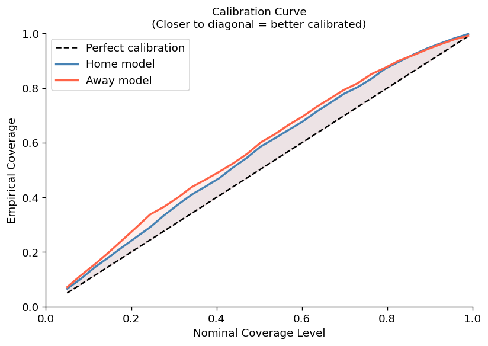
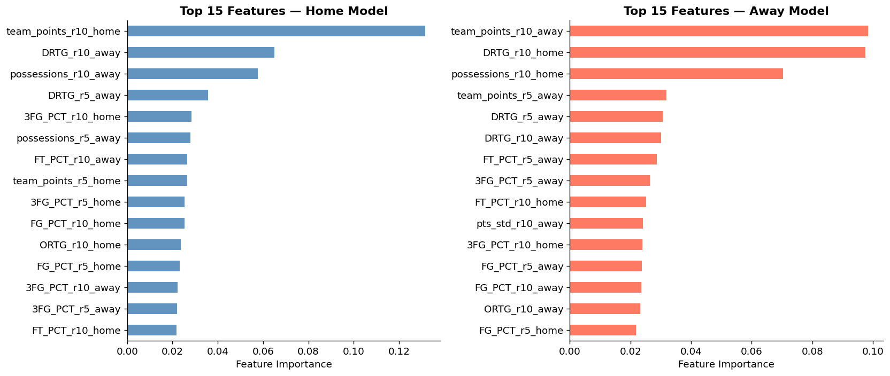
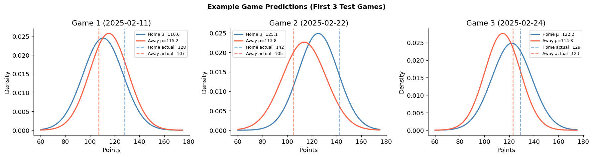

Independent Project
April – May 2026
A probabilistic model predicting how many points the home and away team will each score in an NBA game — a point estimate plus a calibrated uncertainty band, not just a single number.
Most sports-prediction projects I'd seen stopped at a single point estimate and called it done. I wanted to build something closer to what an actual forecaster would ship: a prediction that admits how uncertain it is, and is honest when a simpler model beats a fancier one. This was a solo, self-directed project — I picked the problem, sourced and cleaned the data, and made every modeling call myself, specifically to practice the full lifecycle rather than just the model-fitting step.
I also treated the Ridge Regression baseline as a real competitor, not a formality. When it came out ahead of the Gradient Boosting model on two of the four evaluation metrics, that went in the results section, not a footnote.
The dataset covers 14,746 team-game rows (7,373 games, 33 teams) from December 2020 through March 2026. After requiring sufficient rolling history, 7,289 games and 42 engineered features (21 per team side) remained for modeling.

| Model | Side | RMSE | MAE | Log-likelihood | 90% PI coverage |
|---|---|---|---|---|---|
| Ridge baseline | Home | 12.292 | — | -3.9308 | — |
| Ridge baseline | Away | 12.219 | — | -3.9235 | — |
| Gradient Boosting | Home | 12.545 | 10.060 | -3.9956 | 95.0% |
| Gradient Boosting | Away | 12.441 | 9.749 | -3.9911 | 94.8% |
Reading these numbers honestly
The Ridge Regression baseline actually edges out the final Gradient Boosting model on both RMSE and log-likelihood — the added nonlinear complexity didn't pay for itself on this evaluation. The prediction intervals also ran conservative: a nominal 90% interval covered 94.8–95.0% of actual outcomes, meaning the model is slightly under-confident rather than over-confident. Reporting the baseline comparison plainly, rather than only the model that "sounds more advanced," was a deliberate choice here.




The honest baseline comparison points directly at where the next iteration should go: player-level availability data (the biggest gap called out above), a per-team volatility model instead of one global uncertainty calibration, and testing a non-normal scoring distribution against the current normal assumption. I'd also want to re-run the baseline comparison after those changes — it's entirely possible Ridge keeps winning, and that would be worth knowing too.
Solo project, end to end — data collection and cleaning, feature engineering, both models, uncertainty calibration, and the evaluation write-up above are all mine. Code and notebooks are on GitHub.